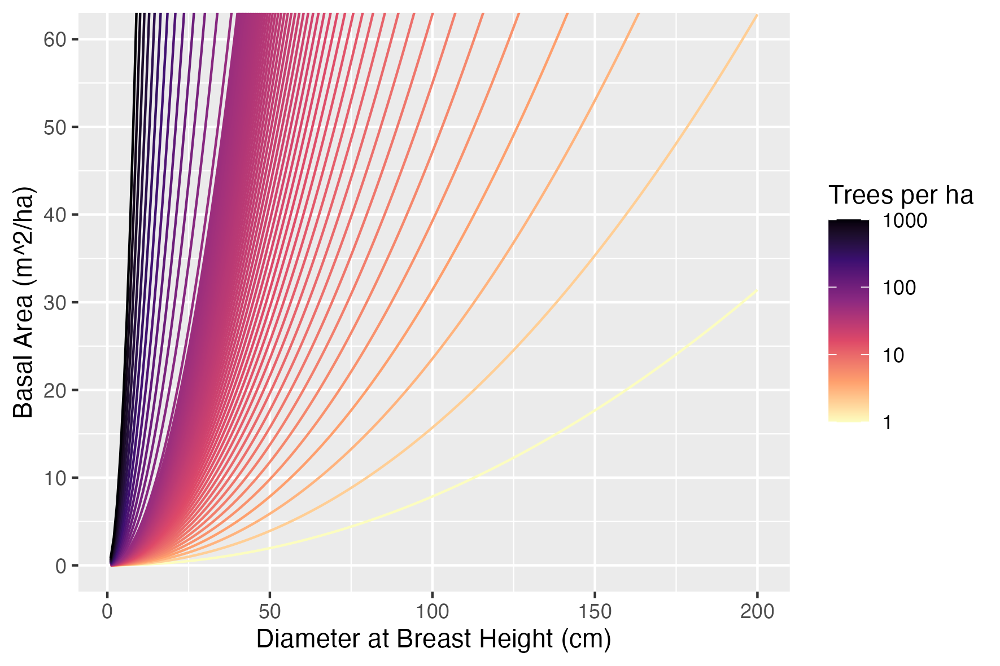
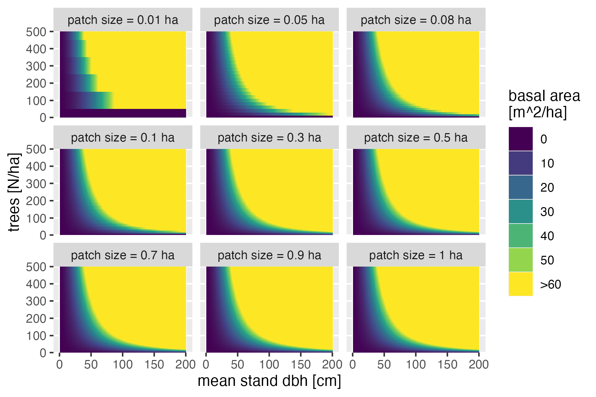

This function calculates the basal area of a stand based on the diameter at breast height (dbh), the number of trees, and the patch size in hectares.
Details
The basal area of a stand is the cross-sectional area of all trees in a stand per unit area. This function calculates the basal area per ha using the formula: $$BA = \left( \frac{\pi \left( \frac{\text{dbh}}{100} \right)^2}{4} \right) \times \text{trees} \div \text{patch\_size\_ha}$$
The formula takes into account the diameter at breast height (dbh) in centimeters, the number of trees, and the size of the patch in hectares to calculate the basal area in square meters per hectare.
This plot illustrates the basal area for different combinations of dbh and number of trees.

Sensitivity of basal area for different combinations of dbh, number of trees to patch size.

Examples
# BA_stand operates on torch tensors, so this runs only where the torch
# backend (libtorch) is available.
dbh_vec <- seq(1, 200, 1)
trees_vec <- c(0:500, 10^(seq(2, 4, length.out = 20)))
# Generate test data for a patch size of 0.1
patch_size <- 0.1
cohort_df1 <- expand.grid(
trees_ha = trees_vec,
patch_size_ha = patch_size,
dbh = dbh_vec
)
cohort_df1 <- data.frame(
patchID = 1,
cohortID = 1,
species = 1,
cohort_df1
)
cohort_df1$siteID <- 1:nrow(cohort_df1)
cohort_df1$trees <- round(cohort_df1$trees_ha * patch_size)
cohort <- CohortMat$new(obs_df = cohort_df1)
cohort_df1$basal_area <- torch::as_array(
BA_stand(cohort$dbh, cohort$trees, patch_size_ha = patch_size))
# View the first few rows of the resulting data frame
head(cohort_df1)
#> patchID cohortID species trees_ha patch_size_ha dbh siteID trees basal_area
#> 1 1 1 1 0 0.1 1 1 0 0
#> 2 1 1 1 1 0.1 1 2 0 0
#> 3 1 1 1 2 0.1 1 3 0 0
#> 4 1 1 1 3 0.1 1 4 0 0
#> 5 1 1 1 4 0.1 1 5 0 0
#> 6 1 1 1 5 0.1 1 6 0 0